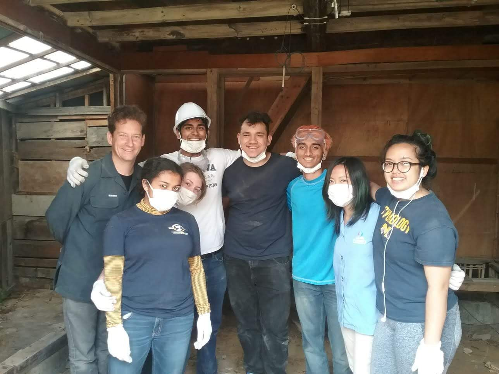
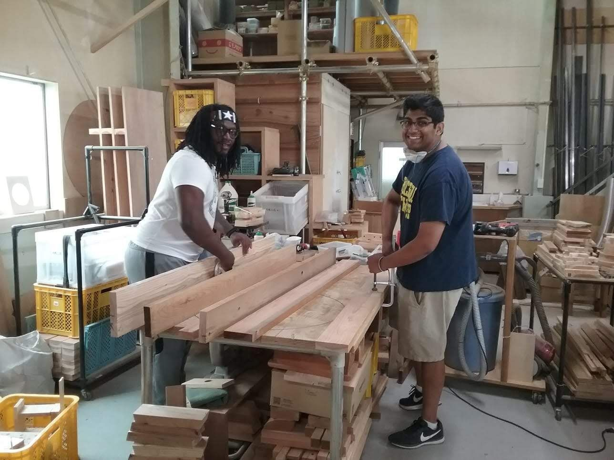
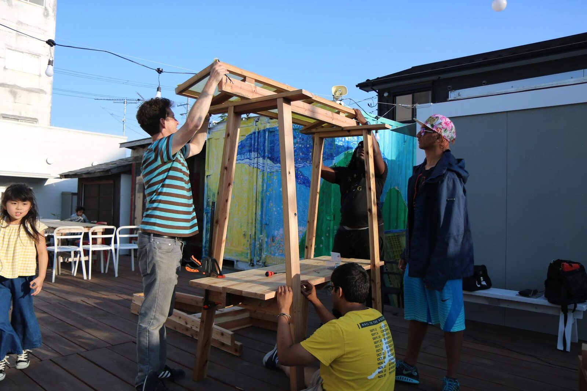
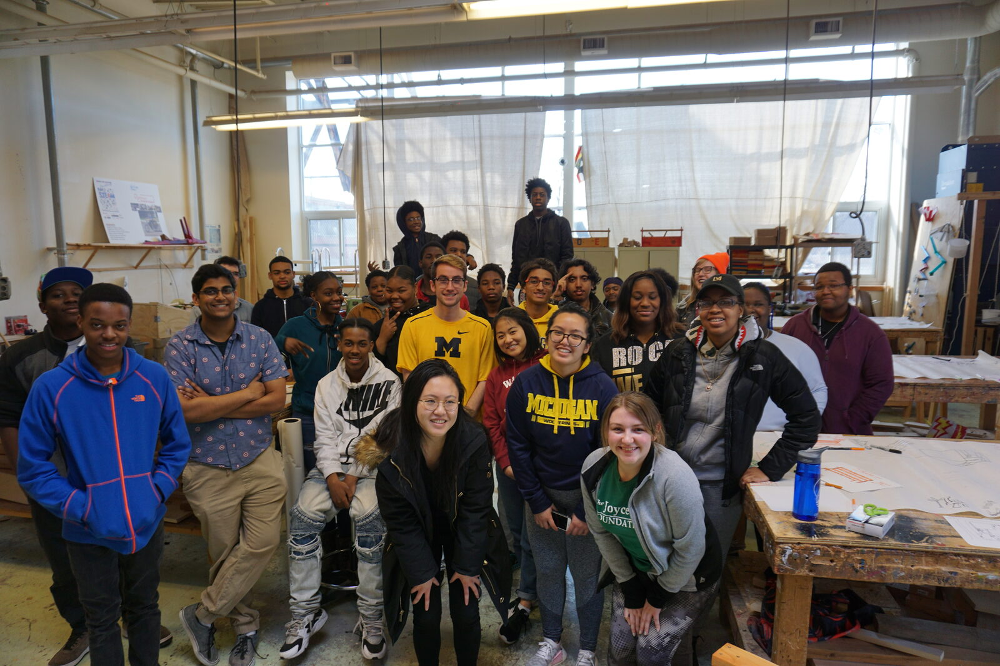
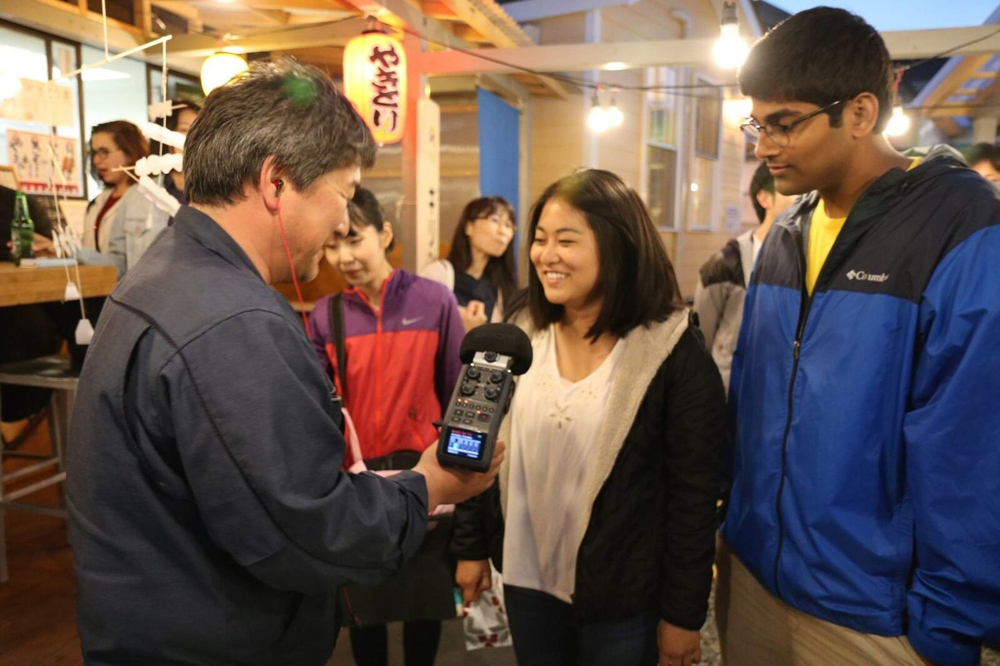
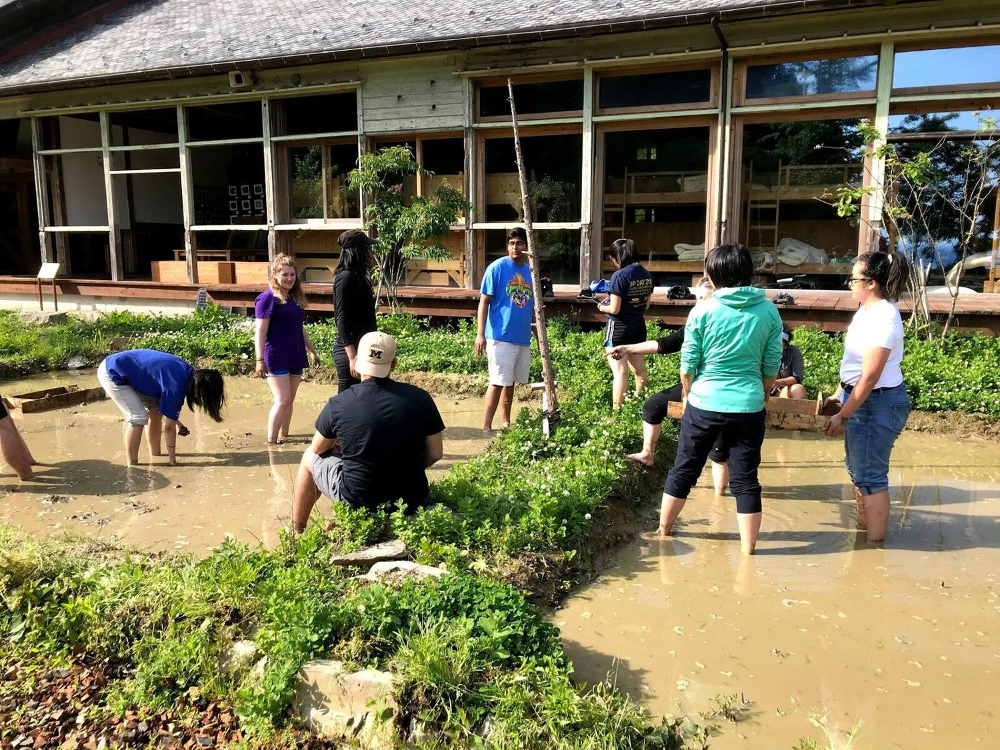
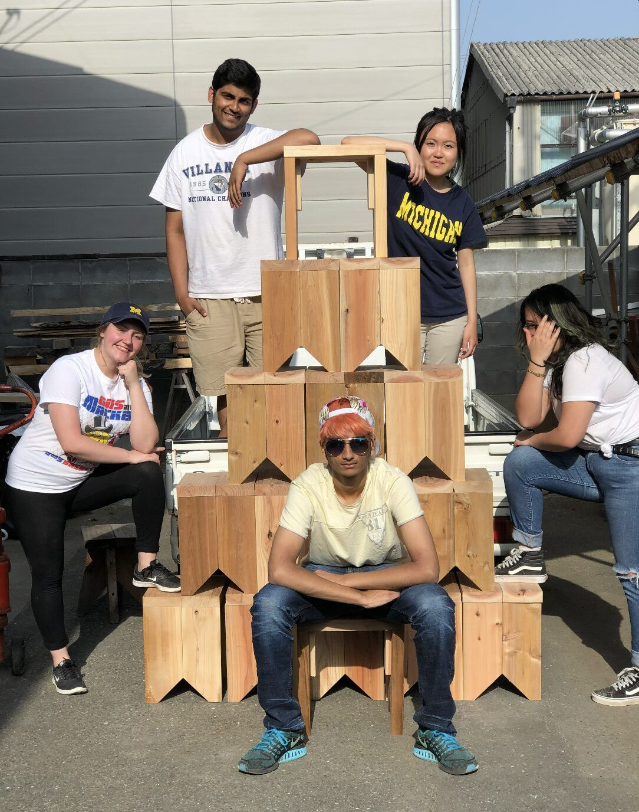

What is Ishinomaki Community Revitilization
In the summer of 2018, I had the privilege of working with Ishinomaki Laboratory, a beacon of hope and resilience in Ishinomaki, Japan, which bore the brunt of the catastrophic 2011 earthquake and tsunami. Originating as a community workshop post-disaster, Ishinomaki Laboratory has grown into a globally recognized DIY label that merges impeccable design with handmade craftsmanship. My role involved constructing wooden benches, tables, and chairs that not only served the local community's immediate needs but also symbolized its unwavering spirit.
Through collaboration with local high school students, fellow volunteers, and designers from around the world, I witnessed the transformative power of DIY and design in rejuvenating communities and igniting hope. The initiative exemplifies the belief that creativity, community, and collaboration can reshape our world, no matter the challenges we face.
Some Pictures from Ishinomaki







Drag to spin · click a photo to enlarge